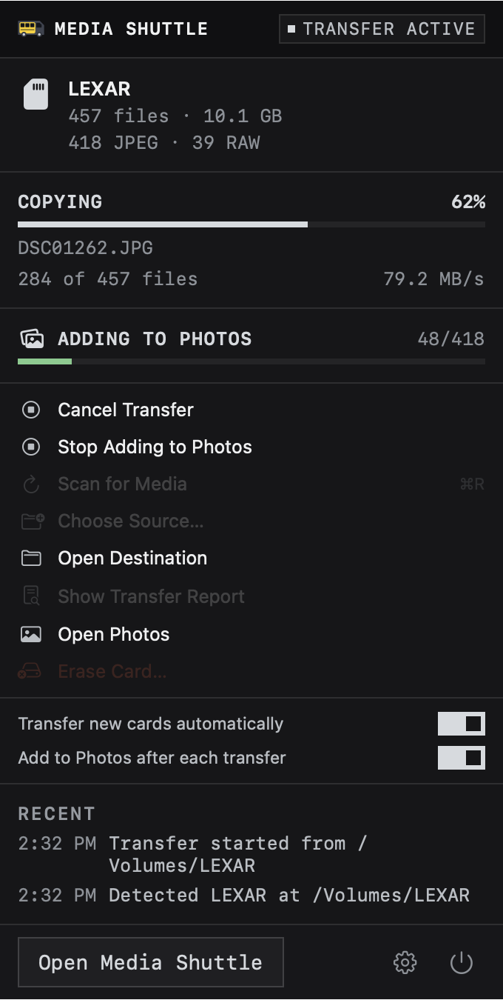

Checks every copy
Each file is hashed on the card and again at the destination. A file only counts as copied when the two match.
Media Shuttle copies photos and videos off a camera card and checks each copy against the original with SHA-256. It can add them to Apple Photos, and it won’t erase the card until every file has a verified copy.
Free and open source. macOS 14 or later.
Each file is hashed on the card and again at the destination. A file only counts as copied when the two match.
JPEG, RAW and video go into separate folders, optionally by date. Files already at the destination are checked and skipped instead of copied again.
Erase stays locked until a verified transfer. Before deleting, it checks every file on the card against its copy again, and you type ERASE EVERYTHING to confirm.
MAC
Send the verified copies to your Photos library with one click, or automatically after each transfer. If you use iCloud Photos, they sync to your other devices.
The menu bar shows the card, progress and recent activity. You can start a transfer, add to Photos, eject the card or turn on automatic transfer from there.

| Finder | Media Shuttle | |
|---|---|---|
| Checks each copy against the card | No | SHA-256, every file |
| Sorts JPEG, RAW and video | By hand | Automatically |
| Skips files already copied | Asks each time | Checks, then skips |
| Blocks erasing an unsafe card | No | Yes |
| Adds to Apple Photos | Separate import | One click |
| Starts when a card is inserted | No | Optional |
| Keeps a report of each transfer | No | Yes |
ARW, CR3, NEF, RAF, DNG, ORF, RW2 and other RAW formats, JPEG, HEIF, and MP4, MOV, MXF, BRAW, R3D and AVCHD video.
No account, analytics or network requests. Settings, logs and transfer reports stay on your computer.
Yes. It’s open source under the MIT license.
No. Media Shuttle doesn’t connect to the internet. If you add photos to Apple Photos, your iCloud settings decide what syncs.
Erase only unlocks after a verified transfer. It checks every file against its copy again first, and it refuses if the card has files it can’t verify.
No. It deletes the files and leaves the card’s filesystem as it is. Use your camera’s Format command for a fresh card.
Any camera that writes a DCIM folder, plus Sony’s M4ROOT and PRIVATE video folders. You can also choose any folder yourself.
Both have native apps with the same verified copy and erase. Apple Photos import is Mac only.
For Apple silicon and Intel Macs on macOS 14 or later. Signed and notarized by Apple.
Download for MacInstaller for Windows 10 and 11. Nothing else to install.
Download for WindowsA GTK app that installs for your user with one script.
Install on Linux